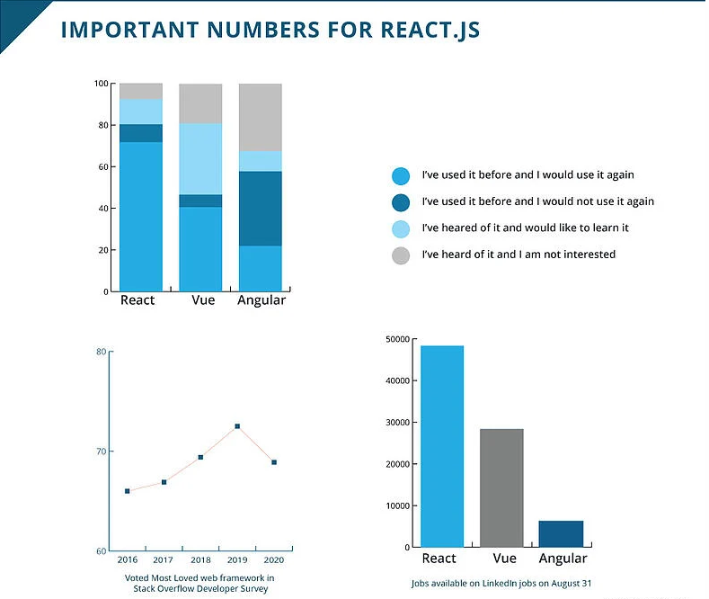
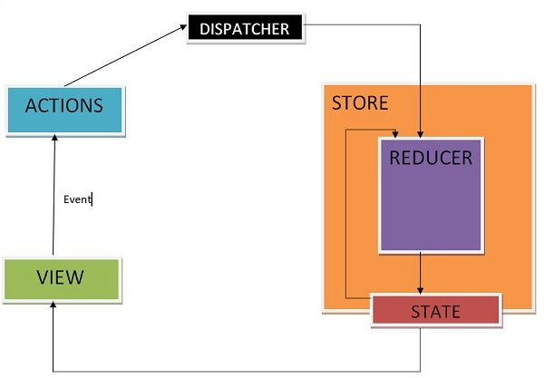

REACT

Table of contents
- Introduction
- Basic knowledge
- REACT
- History
- Statistics
- Virtual DOM
- JSX
- Components
- Redux
- Summary
Introduction
WHO I AM: Muhammed Abdrahman;
AGE: 18;
github.com/muhammed03
Frontend developer
Basic knowledge
- HTML & CSS
- JSX (JavaScriptXML) & Babel
- Fundamental JavaScript and ES6
- Package manager (Node and NPM)
- GIT and CLI
History
React was created by Jordan Walke, a software engineer at Facebook, who released an early prototype of React called "FaxJS". He was influenced by XHP, an HTML component library for PHP.

What is the REACT?
DEFINITION
A JavaScript library for building user interfaces
Advantages
React makes it painless to create interactive UIs Design simple views for each state in your application, and React will efficiently update and render just the right components when your data changes.
Statistics
Sites build with REACTJS
Virtual dom
WHAT?
A virtual DOM object is a representation of a DOM object, like a lightweight copy.
How it helps?
By comparing the new virtual DOM with a pre-update version, React figures out exactly which virtual DOM objects have changed. This process is called “diffing.”
Summary
Once React knows which virtual DOM objects have changed, then React updates those objects, and only those objects, on the real DOM. In our example from earlier, React would be smart enough to rebuild your one checked-off list-item, and leave the rest of your list alone.

REACT JSX
JSX is an XML/HTML-like syntax used by React that extends ECMAScript so that XML/HTML-like text can co-exist with JavaScript/React code. The syntax is intended to be used by preprocessors (i.e., transpilers like Babel) to transform HTML-like text found in JavaScript files into standard JavaScript objects that a JavaScript engine will parse.
Hidden Slides
This slide is visible in the source, but hidden when the presentation is viewed. You can show all hidden slides by setting the `showHiddenSlides` config option to `true`.
Code
const name = 'Иван-Царевич';
const element = Здравствуй, {name}!
;
ReactDOM.render(
element,
document.getElementById('root')
);
We declare a variable called name and then use it inside JSX by wrapping it in curly braces:
=>
Components
Components let you split the UI into independent, reusable pieces, and think about each piece in isolation.
function Welcome(props) {
return Hellom {props.name}
;
}

REDUX

Explanation
Redux itself is a standalone library that can be used with any UI layer or framework, including React, Angular, Vue, Ember, and vanilla JS. Although Redux and React are commonly used together, they are independent of each other.
STEPS
Summary
At the initial stage, React slows down the work. Understanding how props and state work and how components interact is not easy, and documentation is a "maze of information". In theory, this can be solved quickly if a whole team works on it; React does not support browsers from IE8 and below, and never will; If your application/website is not saturated with a large number of dynamic pages, you will have to write a lot of code, solving small tasks; You will be reinventing bicycles. React is young, so there are no established practices. Does your app need a dropdown, window resize, or lightbox? You'll have to write it all from scratch